Процессор, АЦП и Хранение
Ф05 · процессор · АЦП · RAW
Основные элементы фотоаппарата
- Матрица (ПИ)
- Объектив
- Затвор
- Процессор
- Устройство хранения
- …свойства изображения зависят от свойств составных элементов ЦФК

Процессор
- управление фокусировкой объектива
- АЦП
- Формирование файла и сжатие изображения
- Запись на карту памяти
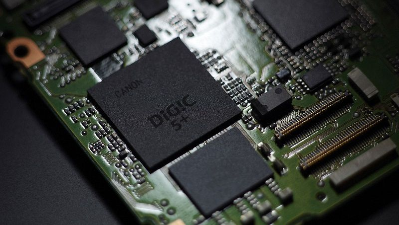
Аналого-цифровое преобразование (АЦП)
– это процесс преобразования входной физической величины в ее числовое представление.
Аналого-цифровой преобразователь – устройство, выполняющее такое преобразование.
величиной АЦП может быть любая физическая величина – напряжение, ток, сопротивление, емкость, частота следования импульсов, угол поворота вала и т.п.
https://habr.com/ru/articles/125029/
АЦП
- дискретизация
- квантование
- кодирование
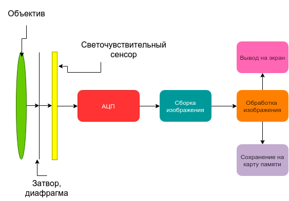
АЦП
• дискретизация – преобразование исходного аналогового сигнала в последовательность дискретных значений, получаемых через заданные временные интервалы;
• квантование – замена действительного мгновенного значения сигнала округленным значением, равным ближайшему фиксированному значению;
• кодирование – образование кодовых комбинаций импульсов.
Дискретизация(discretization)
- представление непрерывной функции дискретной совокупностью её значений при разных наборах аргументов.
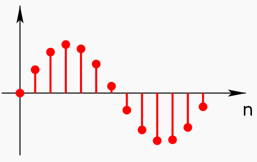
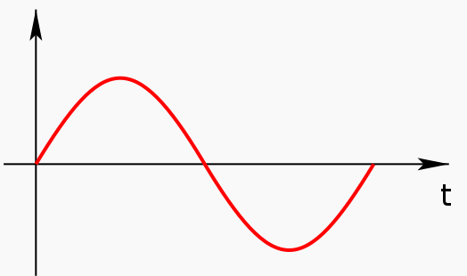
По времени

По пространству
В цифровой фотографии дискретизация характеризуется количеством пикселей на кадр
Квантование (sampling)
- разбиение диапазона значений некоторой величины на конечное число уровней и округление этих значений до ближайших к ним уровней.
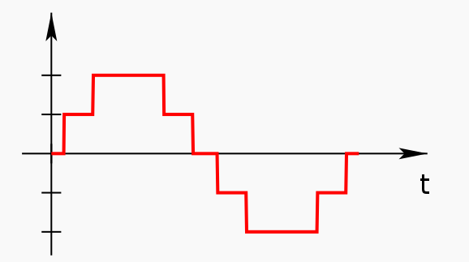

1 бит

Слайд 13
Глубина цвета (Color Depth)
– это количество градаций, допустимых для каждого пикселя.
Указывается в количестве бит на пиксель или бит на канал для данной цветовой модели.
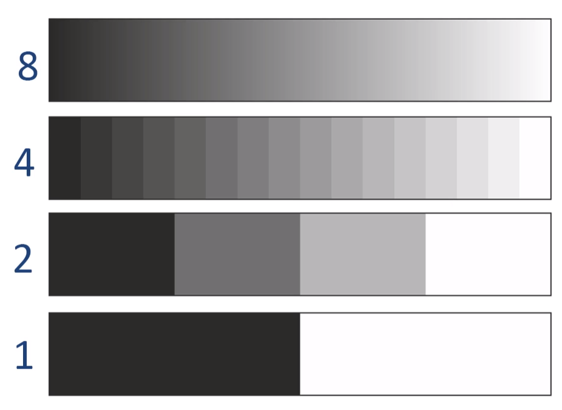
Глубина цвета
- R ~ 8 bit G ~ 8 bit B ~ 8 bit
- 24 bit
Глубина цвета
Слайд 17
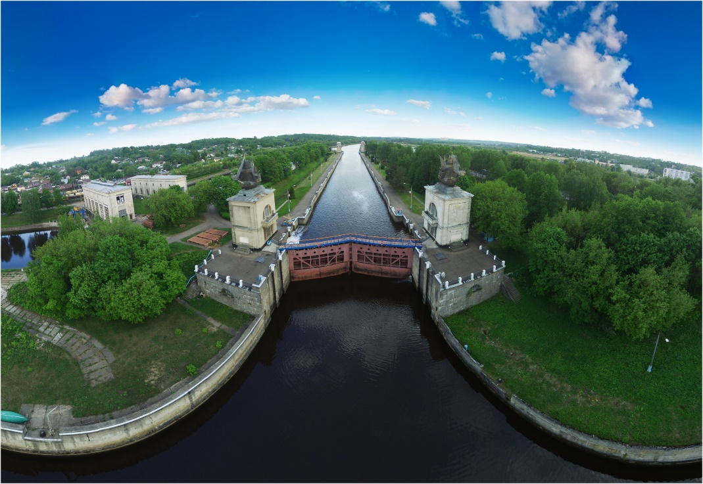
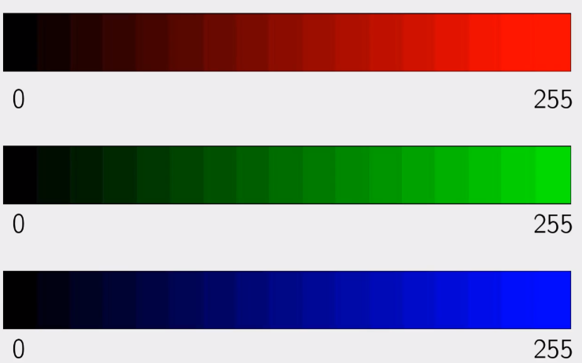
Глубина цвета
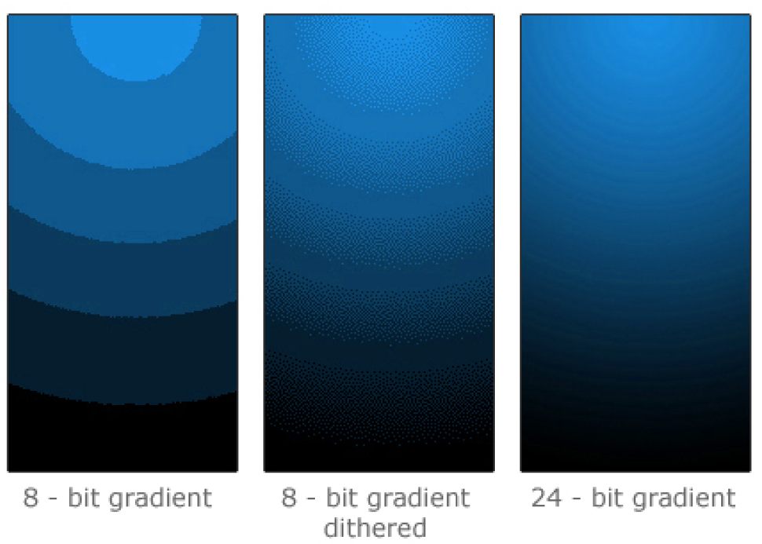
Глубина цвета
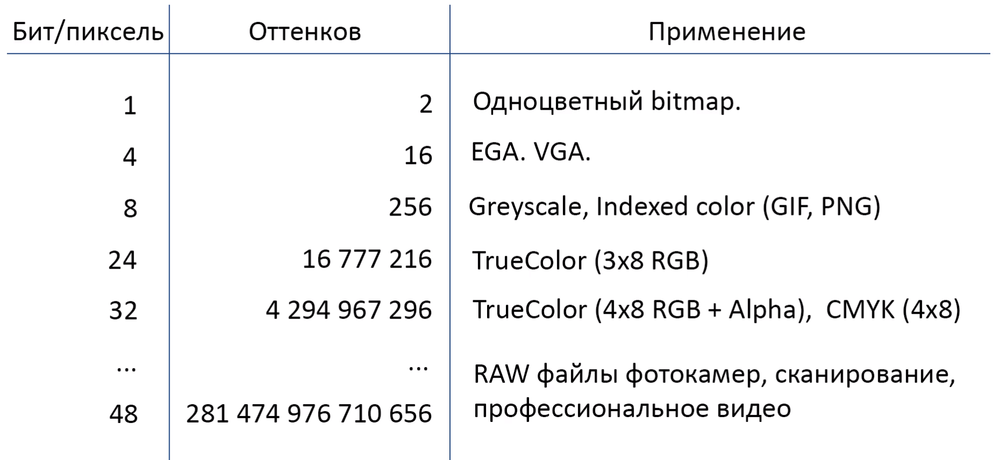
Квантование
- образование кодовых комбинаций импульсов.
- 0, 1010, 10100, 11110, 11001...
- … 1110011, 10111001, 11011100, 100000000
Сигналы:
- аналоговые
- дискретные
- цифровые
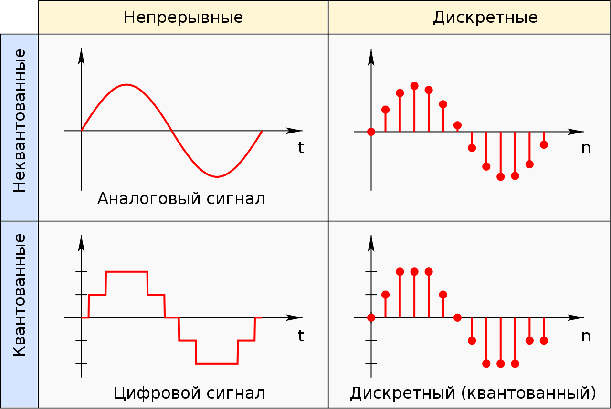
фазовая модуляция
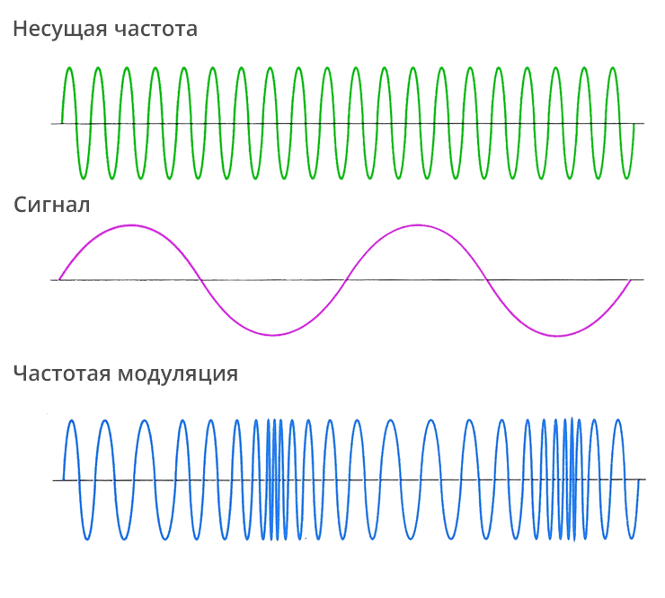
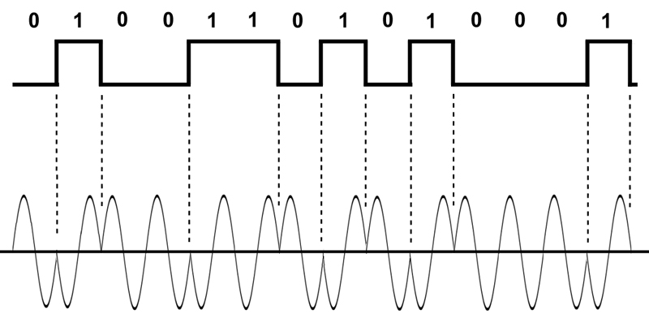
44100 Гц и 16 бит
Зачем вообще сжимать?
Так выглядела современная АТС на 5000 линий в Стокгольме 1890 году.
Построение изображения
- настройки четкости и резкости
- добавляется цветность и насыщенность изображения
- поднимается освещенность
- выравнивается яркость сцены
- устраняются пересветы и провалы в тенях.

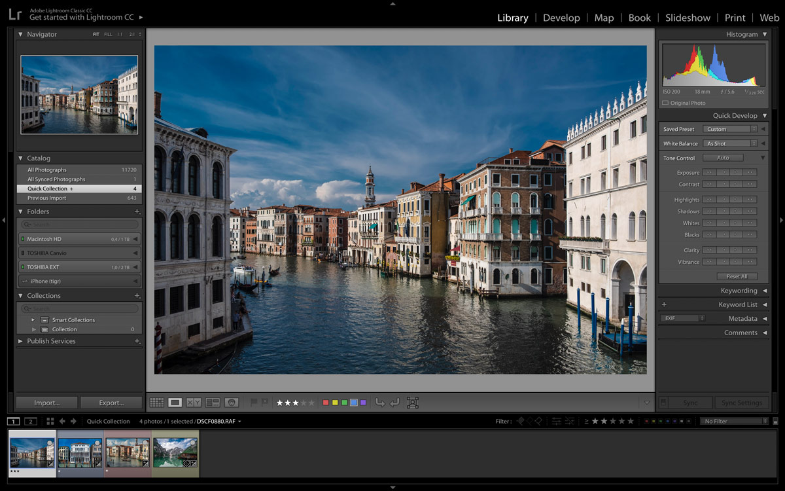
Рождение цифрового негатива
RAW — формат цифровых файлов изображения, содержащий необработанные данные об электрических сигналах с фотоматрицы цифрового фотоаппарата
RAW — не изображение, а матрица чисел, где каждое число — это яркость одного пикселя в одном из цветовых каналов (RGB).
не являются конечным изображением, но содержат всю необходимую информацию для его создания
RAW преимущества
- Высокий динамический диапазон и цветовой охват
- 12-14 бит на канал (4096-16384 оттенка) против 8 бит в JPEG.
- Больше деталей в светах и тенях, плавные градиенты.
- Гибкая неразрушающая обработка
- Все изменения (ББ, экспозиция, кривые) сохраняются как метаданные.
- Исходные данные остаются неизменными, можно всегда откатиться.
- Максимальное качество изображения
- Отсутствие артефактов сжатия и постеризации.
- Возможность использовать лучшие алгоритмы шумоподавления и резкости на ПК.
- Полный контроль над рендерингом
- Ручная настройка баланса белого, контраста, насыщенности после съёмки.
- Выбор алгоритма демозаики и цветового пространства.
- "Страховка" от ошибок съёмки
- Возможность значительно скорректировать экспозицию (особенно +1-3 EV) без серьёзной потери качества.
RAW недостатки
- Большой размер файлов
- Объём в 2-6 раз больше, чем у JPEG.
- Меньше кадров в серии, быстрее заполняется карта памяти и жёсткий диск.
- Необходимость последующей обработки (конвертации)
- Файлы требуют обязательной обработки в RAW-конвертере перед использованием.
- Увеличивает время на работу с фотографиями.
- Отсутствие единого стандарта формата
- У каждого производителя свой формат (.CR3, .NEF, .ARW).
- Проблемы с совместимостью в будущем, нужна конвертация в DNG.
- Замедление работы камеры
- Буфер камеры заполняется быстрее, что снижает скорость серийной съёмки.
- Требуются более мощные и дорогие карты памяти.
- Сложность обмена
- Нельзя сразу отправить клиенту или выложить в соцсети.
- Для просмотра на большинстве устройств нужна предварительная конвертация в JPEG/TIFF.
Визуальный пример RAW vs JPEG
- На примере одна картинка
- (в формате webp)
«Проявление» (Development),
- процесс конвертации файлов RAW, позволяет интерпретировать заложенную в скрытом изображении информацию
- декодирование
- Демозаика/Дебайеризация
- Удаление дефектных пикселей
- баланс белого
- снижение шума
- преобразование цвета
- Воспроизведение тона
- сжатие
Дебайеризация
— это процесс восстановления цветного изображения из данных, полученных с матрицы цифровой камеры, где каждый пиксель записан только в одном из трёх цветов (красный, зелёный или синий) согласно фильтру Байера
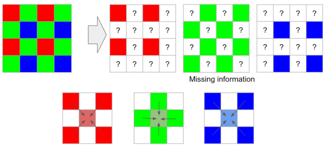
Цифровые негативы/сырые данные/RAW


RAW – это не формат файла
Из-за технических особенностей матриц и АЦП разных производителей всеобщего стандарта RAW не существует
DNG (Digital Negative Specification) - открытый формат для Raw-файлов изображений, используемый в цифровой фотографии. Попытка компании Adobe стандартизировать брендовый хаос.
Особенности RAW
- Нельзя работать напрямую, без интерпретации
- Камера не устанавливает:
- ББ
- Смещение экспозиции
- Параметры экспозиции и цвета
- Резкость и шумоподавление
- Изображения не сжаты
- Бо́льшая широта экспозиционных ступеней
- тем не менее сигнал оцифрован, то есть прошел этапы дискретизации и квантования в АЦП
Метаданные
- производитель камеры
- модель
- выдержка
- диафрагма
- светочувствительность в ед. ISO
- использование вспышки
- разрешение кадра
- фокусное расстояние
- размер матрицы
- эквивалентное фокусное расстояние
- дата и время съёмки
- ориентация камеры (вертикально/горизонтально)
- тип баланса белого
- географические координаты и адрес места съёмки
Вопросы по теме
- Что такое АЦП?
- Какие этапы АЦП выполняются?
- Какие преимущества у RAW перед JPEG?
- Сколько уровней квантования в обычном изображении?